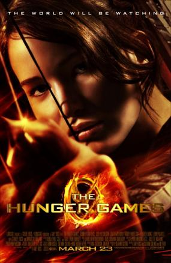

.png)
Jogos Vorazes
Sinopse
Jogos Vorazes é o primeiro livro da série de livros de Suzanne Collins, que conta a história de uma sociedade distópica onde os jovens são forçados a participar de um jogo mortal para entretenimento do público. O livro segue a protagonista Katniss Everdeen, que se voluntaria para participar dos Jogos Vorazes no lugar de sua irmã mais nova. A série é conhecida por sua crítica social e política, bem como por seus personagens complexos e emocionantes.
Sobre
Autora: Suzanne Collins; Ano: 2008; Páginas: aprox. 400 (ed. brasileira); Gênero: Ficção científica distópica e YA; Editora: Scholastic (EUA) / Rocco (Brasil);

Filme Jogos Vorazes
Produção e elenco:
Direção de Gary Ross, estrelando Jennifer Lawrence, Josh Hutcherson e Liam Hemsworth. Com orçamento de US$ 78 milhões, a produção da Lionsgate focou em uma estética visceral e realista para retratar os distritos e a arena.
Recepção e Impacto:
Faturamento de US$ 694 milhões e 84% de aprovação crítica. Venceu um Grammy e consolidou a tendência global de distopias YA no cinema, dando início a uma franquia bilionária de quatro filmes originais.